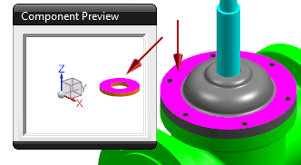
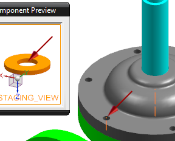
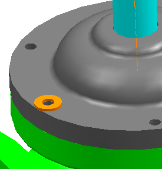

将 des02_valve_assm_2 设为工作部件。
在装配导航器中，右击约束节点并清除在图形窗口中显示约束复选框。
添加 des02_washer，并使用 Model 引用集，和通过约束定位选项。
在 des02_washer 的平面与 des02_valve_yoke 中包含孔的顶面间，应用一个接触对齐→接触约束。

点击应用。
在 des02_washer 圆柱面的轴与 des02_valve_yoke 上孔的中心线之间，应用一个接触对齐→自动判断中心/轴约束。
提示 |
要选择 des02_valve_yoke 上孔的中心线，将您的光标悬浮在小的实例孔的中心线上并等待快速拾取对话框可用。确保您选择的是 des02_valve_yoke 上孔的中心线，而不是小的实例孔的中心线。 |

您必须选择 des02_valve_yoke 上孔的中心线，以保持特征实例关系。如果您直接选择了 des02_valve_yoke 的中心线，垫圈将不会被放置到正确的位置上。
点击确定。
